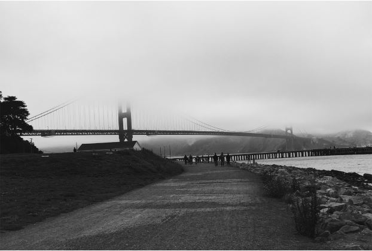
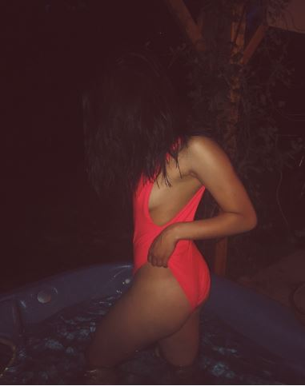
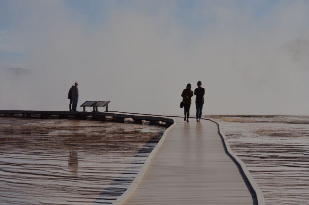
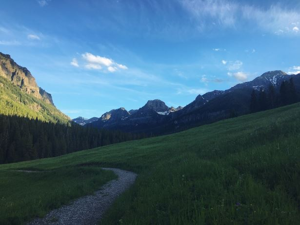
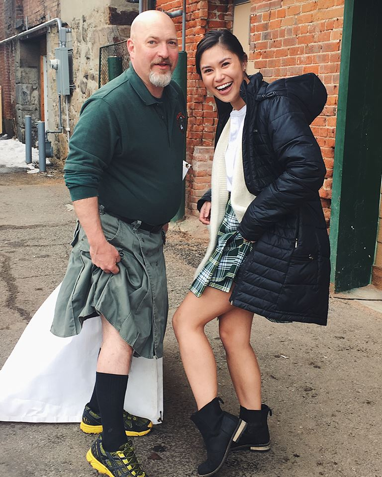
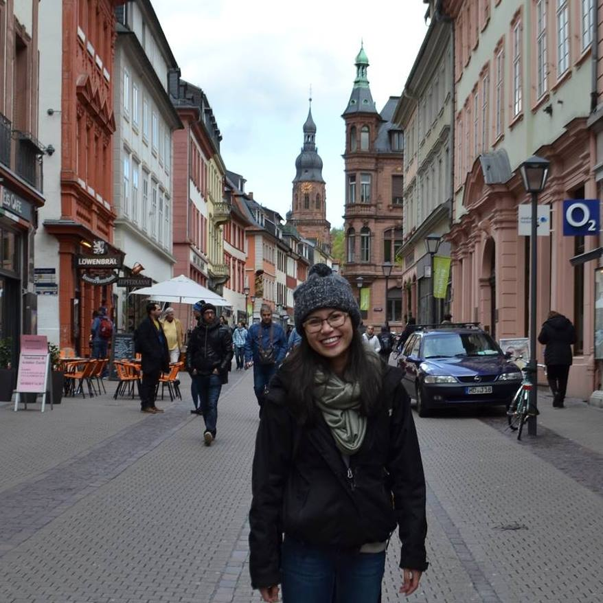
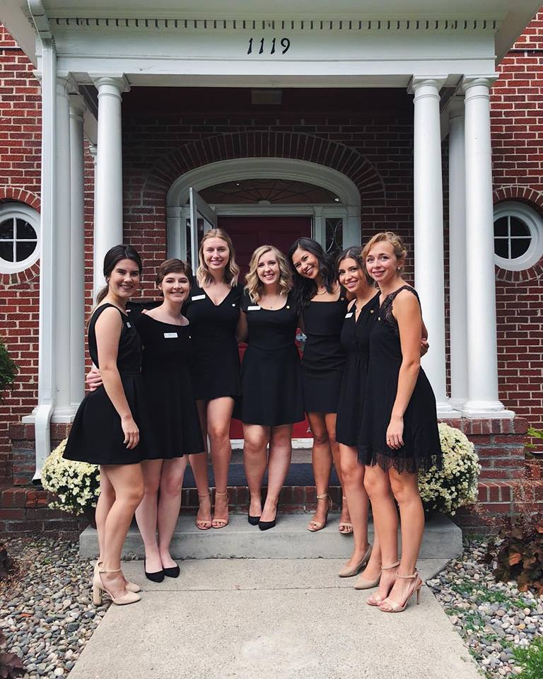
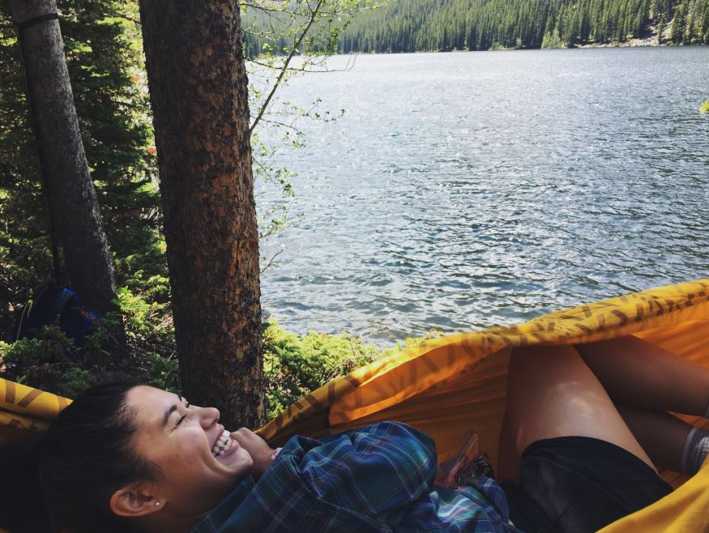
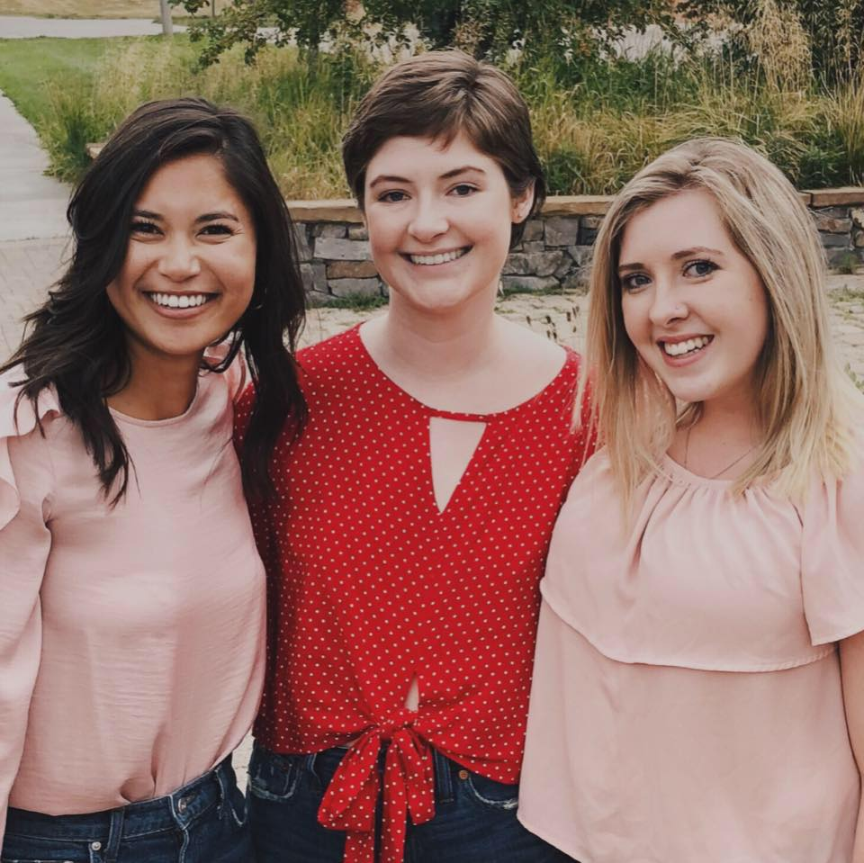
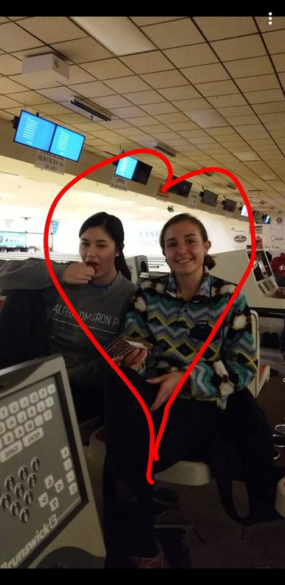

A collection of some of my favorite photos

This is crazy good. You took this? Damn.
Is that legitimate fog obscuring the top of the suspension supports? It gives it a really cool look. The black and white helps too. I really love this picture. I'm kinda surprised at how few people there are. That combined with the black and white gives it a kinda peaceful quality that I really like.

Becca, you're absolutely stunning.
You're so much more than just looks Becca and it's rare for someone to have killer looks and a brain to match. Yet here you are with both. You look amazing in this photo and I love the level of confidence you're giving off. You could do anything with confidence like that.

You took this at Yellowstone, right? It legitimately looks like it could used as a tourist poster for Yellowstone. I love that you stop and take pictures of things in these places that I would just glance over. It really makes me stop and think about where you are when you take these photos and what must be going through your mind. I think you take incredible photos and it's awesome that you have all these memories to look back on. I definitely want to be there with you when you make some more memories at places like this.

Hmmm, where's this one? Glacier? I like this one for a lot of the same reasons why I liked the previous one. Your ability to stop, appreciate, and then capture these scenic moments is inspiring. It makes me want to go to these places and experience them all for myself.

I don't need to say much about this one. We both know who is pulling off this look better.
(Not you)

I like this one because I was crazy excited for you to go to Germany. One of my major regrets was that I wasn't there to experience it with you. I love seeing pictures from your time in Germany. You experienced a ton of cool and exciting new things that not a lot of people from Montana get to experience. It definitely helped you grow as a person and if it's partially responsible for making you into who you are now, then it was a worthwhile trip, because you're amazing.

For a while freshman year I was really worried about you. Everything that was going on with Robby and all that. You never seemed truly happy and it bothered me that I couldn't help more. That's why I like seeing pictures of you and everyone from your sorority. I think you've finally found a place you belong and a whole new family to be with. That makes me really glad. It's really reassuring to know that now you have all these amazing people in your life that can be there for you when I can't. I'm really glad that you have all them and I'm sure they're glad to have you too.

I like this one because you appear genuinely happy. That's not something I got to see from you a lot when we were in high school. (I blame Robby for a lot of that.) We haven't seen each other much lately, so it really brightens my day everytime I see photos like this where you appear genuinely happy. It makes me happy that you're happy and I hope that's a feeling that you get to experience a lot more than you have in the past.

This one I like for the same reason as the other sorority picture. I like seeing photos of you with your friends. I love seeing how happy you are and it makes me feel better knowing that you're in good hands and have great friends to help you out when you need someone and I'm not around.

I couldn't let you get away without an embarrassing picture.
:)